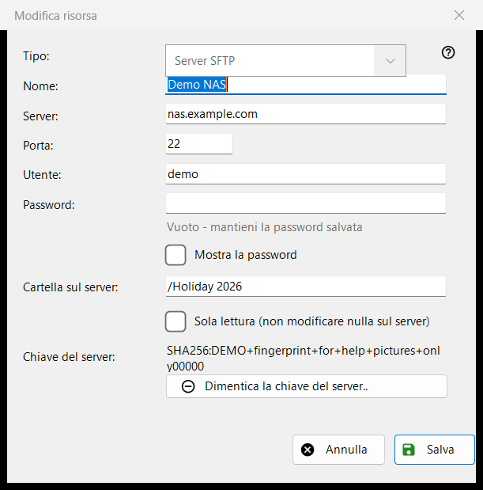
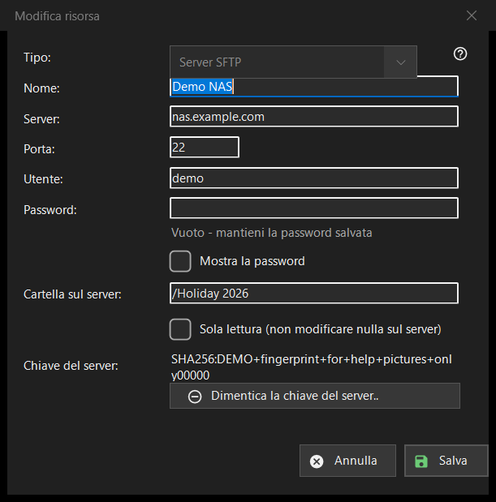

Modifica risorsa
Scopo
Il modulo di un server o di una cartella di rete salvati. «Aggiungi..» nell'elenco delle risorse lo apre vuoto con il titolo «Nuova risorsa», «Modifica..» lo apre compilato come «Modifica risorsa» e un indirizzo sftp:// digitato nel campo della cartella lo apre precompilato.


In questo ordine
- Scegli il tipo: server SFTP o cartella di rete (SMB).
- Dai un nome alla risorsa e inserisci l'indirizzo del server e la porta, oppure il percorso di rete.
- Inserisci il nome utente e la password.
- Imposta la cartella sul server e attiva la sola lettura se lì non deve cambiare nulla.
- Premi «Salva».
Gli elementi
Tipo
«Tipo:» si sceglie quando si crea la risorsa: «Server SFTP» (porta 22, cartella /) o «Cartella di rete (SMB)». Per una risorsa salvata l'elenco è disattivato, perché la password salvata e la chiave del server appartengono a un solo tipo. Per SMB il campo dell'indirizzo si chiama «Cartella di rete:» e accetta un percorso come \\server\folder; i campi della porta e della cartella valgono solo per SFTP.
Nome, server e porta
«Nome:» è ciò che mostra l'elenco; se è vuoto, si usa l'indirizzo del server. «Server:» è un nome o un indirizzo IP e «Porta:» un numero da 1 a 65535. Cambiare il server o la porta elimina gli altri indirizzi arrivati con una risorsa importata, così una password salvata non va mai a un indirizzo che non hai inserito tu.
Utente e password
«Utente:» e «Password:». La password viene salvata cifrata per il tuo account Windows; l'elenco contiene solo un riferimento ad essa. Per una risorsa salvata il campo è vuoto con il suggerimento «Vuoto - mantieni la password salvata»: scrivi qualcosa solo per sostituirla. «Mostra la password» all'inizio è disattivato. Una nuova risorsa richiede una password.
Cartella e sola lettura
«Cartella sul server:» è la cartella che il programma apre per prima, un percorso che inizia con /. «Sola lettura (non modificare nulla sul server)» fa sì che il programma tratti la risorsa come di sola lettura: nessuno spostamento o copia al suo interno, nessuna eliminazione o rinomina.
Chiave del server
«Chiave del server:» mostra l'impronta ricordata per questo server, oppure dice che comparirà alla prima connessione, dove la confermi. «Dimentica la chiave del server..» compare solo quando una chiave è ricordata. Chiede prima conferma (la risposta predefinita è No) e spiega: se il server è stato reinstallato è normale, altrimenti qualcuno potrebbe impersonarlo. Cancella solo la chiave: la connessione successiva mostra la nuova impronta e chiede di nuovo.
Salva
«Salva» controlla i campi e indica il primo problema in rosso sotto di essi: indirizzo, porta, cartella, nome utente o password mancante. «Annulla» chiude il modulo senza modifiche.